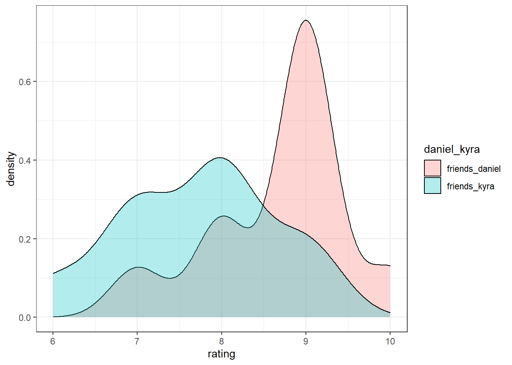
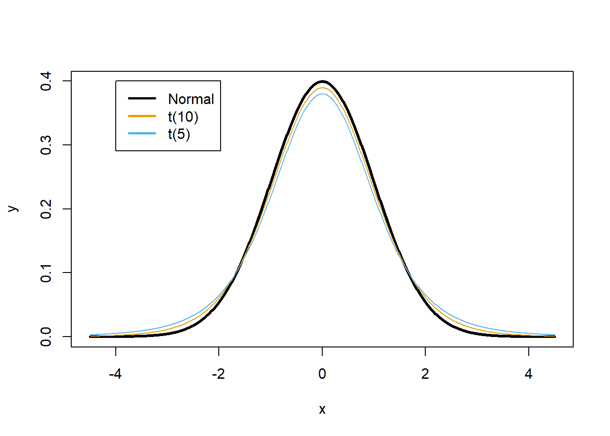
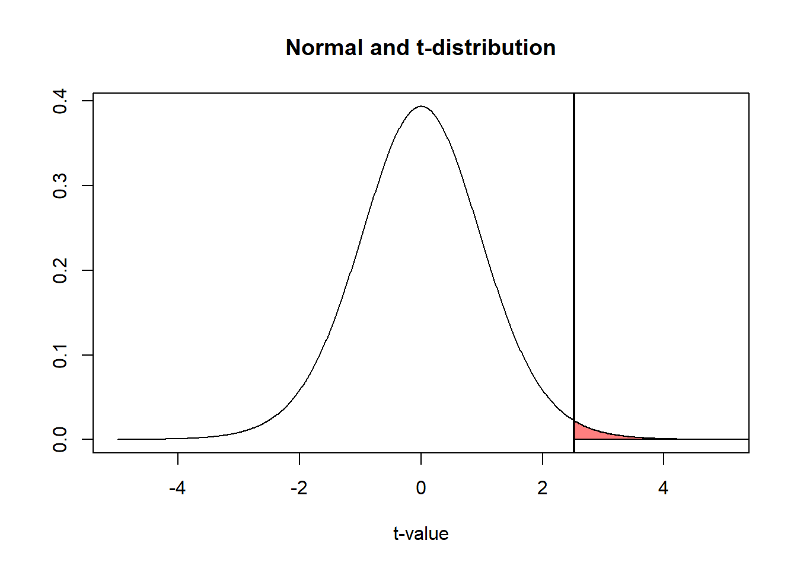
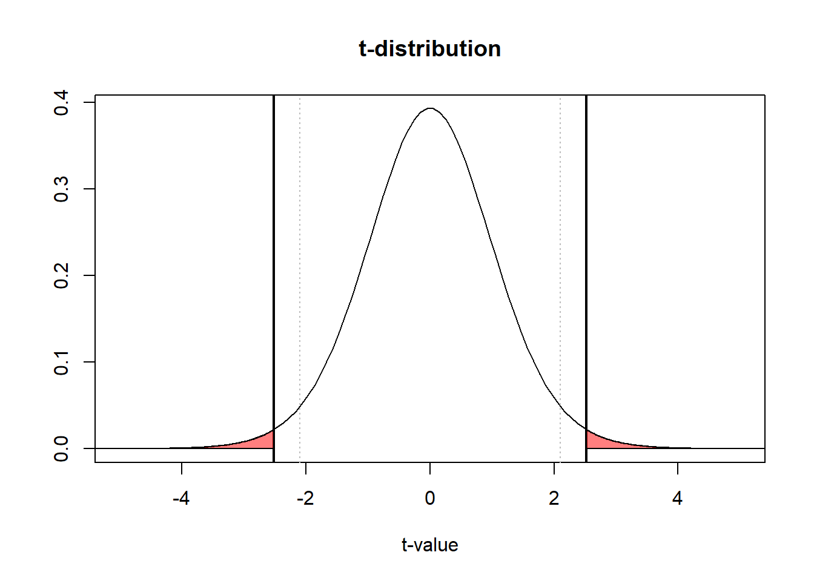
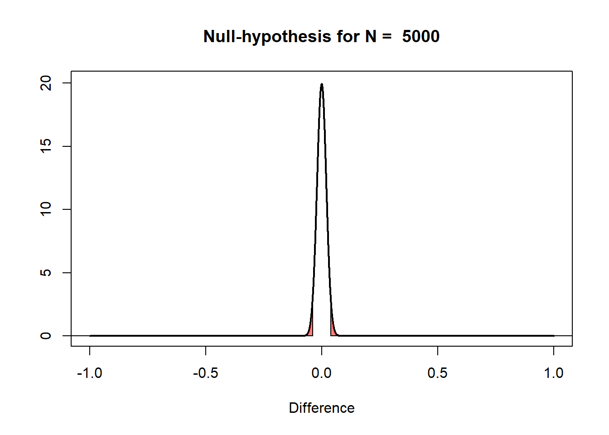
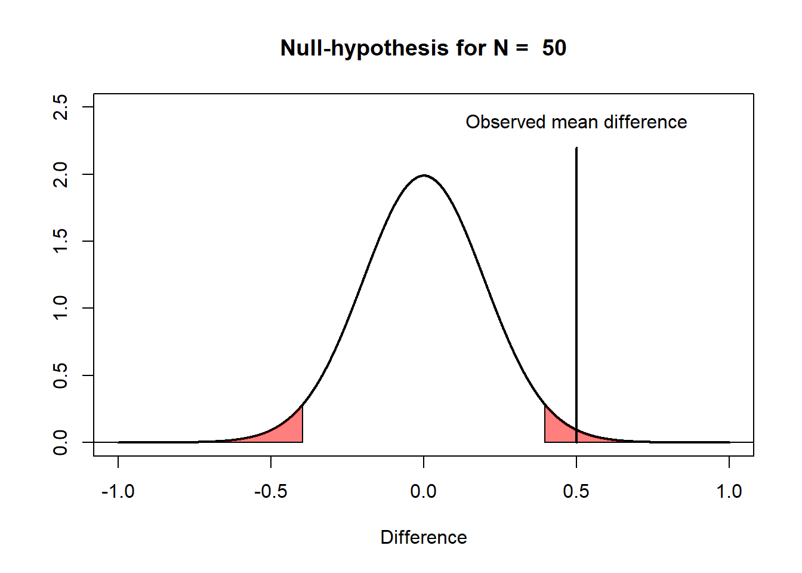
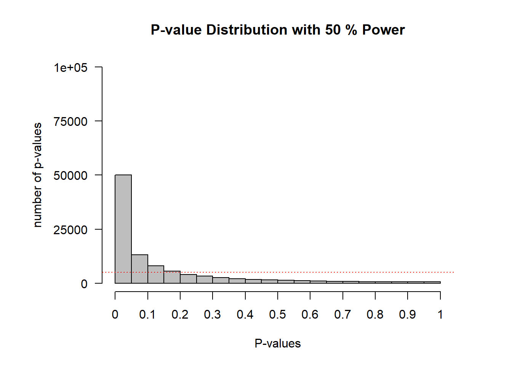
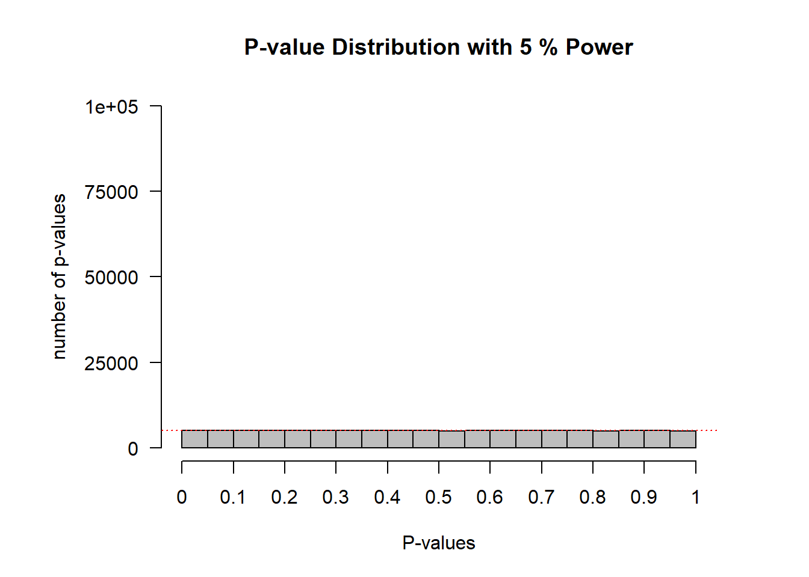

1 What is a p-value
1.1 What is a p-value (mathematically)
 Figure 1.1: Scientists have a tendency to worship p-values below a value of 0.05.
Figure 1.1: Scientists have a tendency to worship p-values below a value of 0.05.
When testing predictions in empirical research, researchers often report whether their results are statistically different from 0. For example, a researcher might be interested in whether the use of a cell-phone increases the likelihood of getting into a car accident compared to not using a cell phone. A researcher might ask one group of individuals to use cell phones while driving in a driving simulator, while a control group does not use cell phones. The researcher might predict cell phone users get into more accidents, and test this prediction by comparing whether the difference between the two groups in the experiment is statistically different from zero. This is typically referred to as null-hypothesis significance testing (NHST). The ‘significance’ part of this name is a misnomer: what we understand as the ‘significance’ of a finding in normal English depends on its theoretical or practical importance and has very little to do with statistics. Instead, we will therefore refer to such tests as ‘null-hypothesis testing’, and use ‘statistical difference’ for what is sometimes referred to in the literature as a ‘significant finding’ or a ‘statistically significant finding’.
Assume we ask two groups of 10 people how much they liked the extended directors cut version of the Lord of the Rings (LOTR) trilogy. The first group consists of my friends, and the second groups consists of friends of my wife. Our friends rate the trilogy on a score from 1 to 10. We can calculate the average rating by my friends, which is 8.7, and the average rating by my wife’s friends, which is 7.7. The difference is 1.
| friends | myfriends | mywifesfriends |
|---|---|---|
| friend_1 | 9 | 9 |
| friend_2 | 7 | 6 |
| friend_3 | 8 | 7 |
| friend_4 | 9 | 8 |
| friend_5 | 8 | 7 |
| friend_6 | 9 | 9 |
| friend_7 | 9 | 8 |
| friend_8 | 10 | 8 |
| friend_9 | 9 | 8 |
| friend_10 | 9 | 7 |
To get these data in a data frame in R, we use the code:
friends <- c("friend_1","friend_2","friend_3","friend_4","friend_5","friend_6","friend_7","friend_8","friend_9","friend_10")
friends_daniel = c(9,7,8,9,8,9,9,10,9,9)
friends_kyra = c(9,6,7,8,7,9,8,8,8,7)
df <- data.frame(friends,friends_daniel,friends_kyra)Let’s first look at the data by plotting it.
# Get data frame in long format for plotting
df_long <- gather(df, daniel_kyra, rating, friends_daniel:friends_kyra, factor_key=TRUE)
# Plot the data
ggplot(df_long, aes(x=rating, fill=daniel_kyra)) + geom_density(alpha=.3) + theme_bw()
We can also summarise the data and look at the means, sd, and sample size per group:
summarise(group_by(df_long, daniel_kyra),
mean = mean(rating), sd = sd(rating), n = n(),
.groups = 'drop')## # A tibble: 2 x 4
## daniel_kyra mean sd n
## <fct> <dbl> <dbl> <int>
## 1 friends_daniel 8.7 0.823 10
## 2 friends_kyra 7.7 0.949 10We can see the groups overlap to a certain extent, but the mean ratings differ by 1 whole point, so there is also some non-overlap. The question we are no faced with is the following: Is the difference between the two groups just random variation, or can we conclude my friends really like the extended directors cut of the Lord of the Rings (LOTR) trilogy more than my wife’s friends?
In null-hypothesis testing we try to answer this question by calculating the probability of observing a specific, or more extreme, outcome of a test (i.e., a difference in movie ratings of 1 point or more) assuming that the null hypothesis is true (i.e., there is no real difference between how much my friends and my wife’s friends like the extended directors cut of LOTR). This probability is called the p-value.
The null-hypothesis assumes that if we would ask an infinite number of my friends and an infinite number of my wife’s friends how much they like LOTR, the difference between these huge groups is exactly 0. However, in a small sample of my friends and my wife’s friends (say 10 friends in each group), random variation is very likely to lead to a difference larger or smaller than 0. How do we know whether an observed difference is due to random variation around a difference of 0, or whether an observed difference is due to random variation around a real difference between our friends?
To answer this question we need to know is what constitutes a reasonable expectation about how much the differences between groups can vary, if we would repeatedly ask samples of groups of friends to rate LOTR. When we compare two groups, we use the means, standard deviations, and number of observations in each group to calculate the t-statistic.
With the means (M), standard deviations (SD) and sample size (N) for each of the two groups from the Table above we can examine the probability that the difference between the two groups is larger than 0, given the data we have available. This is done by calculating the t-statistic, which is related to a probability (a p-value) of getting the observed or a more extreme t-statistic in the t-distribution. The t-distribution describes samples drawn from a population. It is similar to the normal distribution (which describes the entire population). Because the t-distribution describes the probability density function for a specific sample, the shape depends on the sample size. The larger the sample, the more similar the t-distribution becomes to the normal distribution. Below, you can see the normal distribution (with M = 0 and SD = 1) in black, and the t-distribution for 10 and 5 degrees of freedom. We can see the t-distribution has somewhat thicker tails than the normal distribution.
 Now we have a probability density function to compare our t-statistic against, all we need to do is to perform the t-test. R by default performs Welch’s t-test, which does not assume equal variances, instead of Student’s t-test, which does. This is a sensible default (Delacre et al., 2017Delacre, M., Lakens, D., & Leys, C. (2017). Why Psychologists Should by Default Use Welch’s t-test Instead of Student’s t-test. International Review of Social Psychology, 30(1). https://doi.org/10.5334/irsp.82).
##
## Welch Two Sample t-test
##
## data: rating by daniel_kyra
## t = 2.5175, df = 17.65, p-value = 0.02172
## alternative hypothesis: true difference in means is not equal to 0
## 95 percent confidence interval:
## 0.1642993 1.8357007
## sample estimates:
## mean in group friends_daniel mean in group friends_kyra
## 8.7 7.7The t-value is 2.5175. The t-test returns the probability of finding a difference as extreme, or more extreme, as the observed difference. We can graph the t-distribution (for df = 18) and a vertical line at t = 2.5175 in R using:
x <- seq(-5, 5, length = 1000)
plot(x, dt(x, df = 18), col = "black", type = "l",
xlab = "t-value", ylab = "", main = "Normal and t-distribution")
abline(v = 2.5175, lwd = 2)
x <- seq(2.5175, 5, length = 100)
z <- (dt(x, df = 18))
polygon(c(2.5175, x, 8), c(0, z, 0), col = rgb(1, 0, 0, 0.5)) Let’s recall the definition of a p-value: A p-value is the probability of the observed or more extreme data, assuming the null hypothesis is true. The assumption that the null-hypothesis is true is represented by the t-distribution being centered around 0, which is the t-value if the difference between the two groups is exactly 0. The probability of an outcome as high, or higher, as the one observed, is indicated by the blue area. This is known as a one-tailed probability. It is equivalent to the probability that my friends like the extended directors cut of LOTR more than my wife’s friends.
However, that wasn’t my question. My question was whether my friends and my wife’s friends would differ in how much they liked the LOTR movies. It would have been just as interesting to find my friends liked the movies less than my wife’s friends. Since many of my friends have read the book more than 20 times, and it’s often the case that people like the book better than the movie, an opposite outcome would have been just as likely. Furthermore, there has only been one person in my family who has been to a marathon movie night in the cinema when the third LOTR movie came out, and it wasn’t me. So let’s plot the probability that we found a positive or negative difference, as or more extreme as the one observed (the two-tailed probability). Let’s plot this:
x <- seq(-5, 5, length = 100)
plot(x, dt(x, df = 18), col = "black", type = "l", xlab = "t-value", ylab = "", main = "t-distribution")
abline(v = 2.5175, lwd = 2)
abline(v = -2.5175, lwd = 2)
abline(v = -2.100922, col = "grey", lty = 3)
abline(v = 2.100922, col = "grey", lty = 3)
x <- seq(2.5175, 5, length = 100)
z <- (dt(x, df = 18))
polygon(c(2.5175, x, 8), c(0, z, 0), col = rgb(1, 0, 0, 0.5))
x <- seq(-5, -2.5175, length = 100)
z <- (dt(x, df = 18))
polygon(c(-8, x, -2.5175), c(0, z, 0), col = rgb(1, 0, 0, 0.5))
I have plotted two critical values by horizontal grey dotted lines, which indicate the critical t-values for a difference to be significant (p < .05) for a t-distribution with 18 degrees of freedom. We can see that the observed difference is more extreme than the minimal critical values. However, we want to know what the exact probability of the two blue areas under the curve is. The t-test already provided us with the information, but let’s calculate it. For the left tail, the probability of a value smaller than t = -2.5175 can be found by:
## [1] 0.01075515If we would simply change the sign on -2.5175, we would get the probability of a value smaller than 2.5175. What we want is the probability of a value higher than that, which equals:
## [1] 0.01075515This value is identical to the probability in the other tail because the t-distribution is symmetric. If we add these two probabilities together, we get p = 0.02151. This is the same as the p-value provided by the t-test we performed earlier returned.
For a video lecture on this topic, see:
1.2 What is a p-value (conceptually)
REWRITE TAKEN FROM P_VALUE PAPER
The correct definition of a p-value is the probability of observing the sample data, or more extreme data, assuming the null hypothesis is true. The interpretation of a p value depends on the statistical philosophy one subscribes to. In a Fisherian framework a p-value is interpreted as a continuous measure of compatibility between the observed data and the null-hypothesis (Greenland et al., 2016Greenland, S., Senn, S. J., Rothman, K. J., Carlin, J. B., Poole, C., Goodman, S. N., & Altman, D. G. (2016). Statistical tests, P values, confidence intervals, and power: A guide to misinterpretations. European Journal of Epidemiology, 31(4), 337–350. https://doi.org/10.1007/s10654-016-0149-3). The compatibility of observed data with the null model falls between 1 (perfectly compatible) and 0 (extremely incompatible), and every individual can interpret the p value with “statistical thoughtfulness” . In a Neyman-Pearson framework the goal of statistical tests is to guide the behavior of researchers with respect to a hypothesis. Based on the results of a statistical test, and without ever knowing whether the hypothesis is true or not, researchers choose to tentatively act as if the null hypothesis or the alternative hypothesis is true. In psychology, researchers often use an imperfect hybrid of the Fisherian and Neyman-Pearson frameworks, but the latter is, according to Dienes Dienes (2008Dienes, Z. (2008). Understanding psychology as a science: An introduction to scientific and statistical inference. Palgrave Macmillan.) “the logic underlying all the statistics you see in the professional journals of psychology”.
1.3 What is a p-value, not (misunderstandings)
For decades statisticians have complained about how researchers misunderstand p-values. Rozeboom (1997) has referred to null hypothesis significance testing (NHST) as “surely the most bone-headedly misguided procedure ever institutionalized in the rote training of science students” (p. 335). And still, here we are, as part of your rote training, teaching you about p-values and hypothesis tests.
One of the biggest problems with p-values is that the people who use them typically don’t understand how to interpret p-values. I think one reason that p-values are commonly misunderstood is that teachers rarely take enough time to really explain what they mean. Some things aren’t easy to remember, like the prepositions that have the 3rd (dative) case in German. When I was fifteen my German teacher spent hours rhythmically tapping on his desk with his wedding ring as students would, on each tap, recite ‘aus, bei, mit, nach, zeit, von, zu’. I am now more than twice as old as when I learned these seven prepositions, but I remember them to this day. If we expect people to truly understand what p-values mean, we should probably repeatedly explain this until it clicks. So here we go!
A p-value is the probability of the observed data, or more extreme data, under the assumption that the null hypothesis is true. The goal of this assignment is to understand what this means, and perhaps more importantly, what this doesn’t mean. First, we need to know what ‘the assumption that the null hypothesis is true’ looks like, and which data we should expect if the null hypothesis is true. Although the null hypothesis can be any value, in this assignment we will assume the null hypothesis is specified as a mean difference of 0. For example, we might be interested in calculating the difference between a control condition and an experimental condition on a dependent variable.
It is useful to distinguish the null hypothesis (the prediction that the mean difference in the population is exactly 0) and the null model (a model of the data we should expect when we collect data when the null hypothesis is true). The null hypothesis is a point at 0, but the null model is a distribution. It is visualized in textbooks or power analysis software using pictures as you can see below, with t-values on the horizontal axis, and a critical t-value somewhere between 1.96 – 2.00 (depending on the sample size). This is done because the statistical test when comparing two groups is based on the t-distribution, and the p-value is statistically significant when the t-value is larger than a critical t-value.
I personally find things become a lot clearer if you plot the null model as mean differences instead of t-values. So below, you can see a null model for the mean differences we can expect when compare two groups of 50 observations where the true difference between the two groups is 0, and the standard deviation is in each group is 11 Because the standard deviation is 1, you can also interpret the mean differences as a Cohen’s d effect size. So this is also the distribution you can expect for a Cohen’s d of 0, when collecting 50 observations.

The first thing to notice is that we expect that the mean of the null model is 0. Looking at the x-axis, we see the plotted distribution is centered on 0. But even if the mean difference in the population is 0 that does not imply every sample we draw from the population will give a mean difference of exactly zero. There is variation around the population value, as a function of the standard deviation and the sample size.
The y-axis of the graph represents the density, which provides an indication of the relative likelihood of measuring a particular value of a continuous distribution. We can see that the most likely mean difference is the true population value of zero, and that larger differences from zero become increasingly less likely. The graph has two areas that are colored red. These areas represent 2.5% of the most extreme values in the left tail of the distribution, and 2.5% of the most extreme values in the right tail of the distribution. Together, they make up 5% of the most extreme mean differences we would expect to observe, given our number of observations, when the true mean difference is exactly 0. When a mean difference in the red area is observed, the corresponding statistical test will be statistically significant at a 5% alpha level. In other words, not more than 5% of the observed mean differences will be far enough away from 0 to be considered surprising. Because the null hypothesis is true, observing a ‘surprising’ mean difference in the red areas is a Type 1 error.
Let’s assume that the null model in the Figure above is true, and that we observe a mean difference of 0.5 between the two groups. This observed difference falls in the red area in the right tail of the distribution. This means that the observed mean difference is relatively surprising, under the assumption that the true mean difference is 0. If the true mean difference is 0, the probability density functions shows that we should not expect a mean difference of 0.5 very often. If we calculate a p-value for this observation, it would be lower than 5%. The probability of observing a mean difference that is at least far away from 0 as 0.5 (either to the left from the mean, or to the right, when we do a two-tailed test) is less than 5%.
One reason why I prefer to plot the null model in raw scores instead of t-values is that you can see how the null model changes when the sample size increases. When we collect 5000 instead of 50 observations, we see the null model is still centered on 0 – but in our null model we now expect most values will fall very close around 0.

The distribution is much narrower because the distribution of mean differences is based on the standard error of the difference between means. This value is calculated based on the standard deviation and the sample size, as follows:
\(\sqrt{\frac{\sigma_{1}^{2}}{n_{1}}+\frac{\sigma_{2}^{2}}{n_{2}}}\)
This formula shows that the standard deviations of each group (σ) are squared and divided by the sample size of that group, added together, after which the square root is taken. The larger the sample size the bigger the number we divide by, and thus the smaller standard error of the difference between means. In our n = 50 example this is:
\(\sqrt{\frac{1^{2}}{50}+\frac{1^{2}}{50}}\)
The standard error of the differences between means is thus 0.2 for n = 50 in each group, and for n = 5000 it is 0.02. Assuming a normal distribution 95% of the observations fall between 1.96 SE. So for 50 samples per group, the mean differences should fall between -1.96 * 0.2 = -0.392, and +1.96 * 0.2 = 0.392, and we can see the red areas start from approximately -0.392 to 0.392 for n = 50. For 5000 samples per group, the mean differences should fall between -1.96 * 0.02, and +1.96 * 0.02; in other words between -0.0392 to 0.0392 for n = 5000. Due to the larger sample size with n = 5000 observations per group, we should expect to observe mean differences in our sample closer to 0 compared to our null model when we had only 50 observations.
If we collected n = 5000, and we would again observe a mean difference of 0.5, it should be clear that this same difference is even more surprising than it was when we collected 50 observations. We are now almost ready to address common misconceptions about p-values, but before we can do this, we need to introduce a model of the data when the null is not true. If we are not sampling data from a model where the true mean difference is 0, what does our alternative model look like? Some software (such as G*power, see Figure 1.2) will visualize both the null model (red curve) and the alternative model (blue curve) in their output:
 Figure 1.2: Screenshot from Gpower software
Figure 1.2: Screenshot from Gpower software
When we do a study, we rarely already know what the true mean difference is (if we already knew, why would we do the study?). But let’s assume there is an all-knowing entity. Following Paul Meehl, we will call this all-knowing entity ‘Omniscient Jones’. Before we collect our sample of 50 observations, Omniscient Jones already knows that the true mean difference in the population is 0.5. Again, we should expect some variation around 0.5 in this alternative model. The figure below shows the expected data pattern when the null hypothesis is true (now indicated by a grey line) and it shows an alternative model, assuming a true mean difference of 0.5 exists in the population (indicated by a black line).

But Omniscient Jones could have said the true difference was much larger. Let’s assume we do another study, but now before we collect our 50 observations, Omniscient Jones tells us that the true mean difference is 1.5. The null model does not change, but the alternative model now moves over to the right.
You can play around with the alternative and null models in this online app: http://shiny.ieis.tue.nl/d_p_power/. The app allows you to specify the sample size in each group of an independent t-test (from 2 to infinity), the mean difference (from 0 to 2), and the alpha level. In the plot, the red areas visualize Type 1 errors. The blue area visualizes the Type 2 error rate (which we will discuss below). The app also tells you the critical value: There is a vertical line (with n = 50 this line falls at a mean difference of 0.4) and a verbal label that says: “Effects larger than 0.4 will be statistically significant”. Note that the same is true for effects smaller than -0.4, even though there is no second label there, but the app shows the situation for a two-sided independent t-test.
You can see that on the left of the vertical line that indicates the critical mean difference there is a blue area that is part of the alternative model. This is the Type 2 error rate (or 1 - the power of the study). If a study has 80% power, 80% of the mean differences we will observe should fall on the right of the critical value indicated by the line. If the alternative model is true, but we observe an effect smaller than the critical value, the observed p-value will be larger than 0.05, even when there is a true effect. You can check in the app that the larger the sample size, the further to the right the entire alternative distribution falls, and thus the higher the power. You can also see that the larger the sample size, the narrower the distribution, and the less of the distribution will fall below the critical value (as long as the true population mean is larger than the critical value). Finally, the larger the alpha level, the further to the left the critical mean difference moves, and the smaller the area of the alternative distribution that falls below the critical value.
The app also plots 3 graphs that illustrate the power curves as a function of different alpha levels, sample sizes, or true mean differences. Play around in the app by changing the values. Get a feel for how each variable impacts the null- and alternative models, the mean difference that will be statistically significant, and the Type 1 and Type 2 error rates.
So far, several aspects of null models should have become clear. First of all, the population value in a traditional null hypothesis is a value of 0, but in any sample you draw, the observed difference falls in a distribution centered on 0, and will thus most often be slightly larger or smaller than 0. Second, the width of this distribution depends on the sample size and the standard deviation. The larger the sample size in the study, the narrower the distribution will be around 0. Finally, when a mean difference is observed that falls in the tails of the null model, this can be considered surprising. The further away from the null-value, the more surprising this result is. But when the null model is true, these surprising values will happen with a probability specified by the alpha level (and are called Type 1 errors). Remember that a Type 1 error occurs when a researcher concludes there is a difference in the population, while the true mean difference in the population is zero.
We are now finally ready to address some common misconceptions about p-values. Let’s go through a list of common misconceptions that have been reported in the scientific literature. Some of these examples might sounds like semantics. It is easy to at first glance think that the statement communicates the right idea, even if the written version is not formally correct. However, when a statement is not formally correct, it is wrong. And exactly because people so often misunderstand p-values, it is worth it to be formally correct about how they should be interpreted.
1.3.1 Misunderstanding 1: A non-significant p-value means that the null hypothesis is true.
A common version of this misconception is reading a sentence such as ‘because p > 0.05 we can conclude that there is no effect’. Another version of such a sentence is ‘there was no difference, (p > 0.05)’.
Before we look at this misconception in some detail, I want to remind you of one fact that is easy to remember, and will enable you to recognize many misconceptions about p-values: p-values are a statement about the probability of data, not a statement about the probability of a hypothesis or the probability of a theory. Whenever you see p-values interpreted as a probability of a theory or a hypothesis, you know something is not right. Examples of statements about a hypothesis are ‘The null hypothesis is true’, or ‘The alternative hypothesis is true’, because both these statements say that the probability that the null or alternative model is true is 100%. A subtler version is a statement such as ‘the observed difference is not due to chance’. The observed difference is only ‘due to chance’ (instead of due to the presence of a real difference) when the null hypothesis is true, and as before, this statement implies it is 100% probable that the null hypothesis is true.
When you conclude that ‘there is no effect’ or that ‘there is no difference’ you are similarly claiming that it is 100% probable that the null hypothesis is true. But since p-values are statements about the probability of data, you should refrain from making statements about the probability of a theory solely based on a p-value. That’s ok. p-values were designed to help you identify surprising results from a noisy data generation process (aka the real world). They were not designed to quantify the probability that a hypothesis is true.
Let’s take a concrete example that will illustrate why a non-significant result does not mean that the null hypothesis is true. In the figure below, Omniscient Jones tells us the true mean difference is 0.5. We can see this, because the alternative distribution which visualized the probability of the mean differences we should expect when the null hypothesis is true is centered on 0.5. We have observed a mean difference of 0.35. This value is not extreme enough to be statistically different from 0. We can see this, because the value does not fall within the red area of the null model (and hence, the p-value is not smaller than our alpha level).
Nevertheless, we see that observing a mean difference of 0.35 is not only quite likely given that the true mean difference is 0.5, but observing a mean difference of 0.35 is much more likely under the alternative model, than under the null model. You can see this by comparing the height of the density curve at a difference of 0.35 for the null model, which is approximately 0.5, and the height of the density curve for the alternative model, which is approximately 1.5.

All the p-value tells us is that a mean difference of 0.35 is not extremely surprising, if we assume the null hypothesis is true. There can be many reasons for this. In the real world, where we have no Omniscient Jones to tell us about the true mean difference, it is possible that there is a true effect, as illustrated in the figure above.
So what should we say instead? The solution is subtle, but important. Let’s revisit the two examples of incorrect statements we made earlier. First, ‘because p > 0.05 we can conclude that there is no effect’ is incorrect, because there might very well be an effect (and remember p-values are statements about data, not about the probability that there is an effect or is no effect). Fisher’s interpretation of a p-value was that we can conclude a rare event has happened, or that the null hypothesis is false (he writes literally: “Either an exceptionally rare chance has occurred, or the theory of random distribution is not true”). This might sound like it is a statement about the probability of a theory, but it is really just stating the two possible scenarios under which low p-values occur (when you have made a Type 1 error, or when the alternative hypothesis is true). Both remain possible, and we do not quantify the probability of either possible reality (e.g., we are not saying it is 95% probable that the null hypothesis is false). From a Neyman-Pearson perspective a p > .05 means that we can not act as if the null hypothesis can be rejected, without maintaining our desired error rate of 5%. If you are interested in concluding an effect is absent, null hypothesis testing is not the tool to use. A null hypothesis test answers the question ‘can I reject the null hypothesis with a desired error rate’. If you can not do this, and p > 0.05, no conclusion can be drawn based only on the p-value (remember the concept of 無 ‘mu’: the answer is neither yes nor no). Luckily, statistical approaches have been developed to ask questions about the absence of an effect such as equivalence testing, Bayes factors, and Bayesian estimation (see Harms & Lakens, 2018, for an overview). In the assignment in week 6 we will learn about equivalence tests in more detail. The second incorrect statement was ‘there was no difference’’. This statement is somewhat easier to correct. You can instead write ‘there was no statistically significant difference’. Granted, this is a bit tautological, because you are basically saying that the p-value was larger than the alpha level in two different ways, but at least this statement is formally correct. The difference between ‘there was no difference’ and ‘there was no statistically significant difference’ might sound like semantics, but in the first case you are formally saying ‘the difference was 0’ while in the second you are saying ‘there was no difference large enough to yield a p < .05’. Although I have never seen anyone do this, a more informative message might be ‘because given our sample size of 50 per group, and our alpha level of 0.05, only observed differences more extreme than 0.4 could be statistically significant, and our observed mean difference was 0.35, we could not reject the null hypothesis’. If this feels like a very unsatisfactory conclusion, remember that a null hypothesis test was not designed to draw interesting conclusions about the absence of effects – you will need to learn about equivalence tests to get a more satisfactory answers about null effects.
1.3.2 Misunderstanding 2: A significant p-value means that the null hypothesis is false.
This is the opposite misconception from the one we discussed previously. Examples of incorrect statements based on this misconception are ‘p < .05, therefore there is an effect’, or ‘there is a difference between the two groups, p < .05’. As before, both these statements imply it is 100% probable that the null model is false, and an alternative model is true.
As a simple example of why such extreme statements are incorrect, imagine we generate a series of numbers in R using the following command:
## [1] 1.14301139 0.49900897 -2.13159817 2.18340572 1.93436594 -2.09401368
## [7] -2.70641078 1.79003454 0.81592021 0.24345879 -0.31551403 -1.68445514
## [13] -0.63037156 0.14214457 0.28551759 0.56665975 1.23667041 -0.57271609
## [19] -1.50213537 0.46496450 -1.04110110 0.54903038 -1.25112122 -0.59028443
## [25] -1.19761180 -0.09144992 -0.73524380 0.84222464 -2.66814493 -1.49464998
## [31] 1.69763904 0.99730006 -0.08497568 2.75133850 2.38881196 -0.25662945
## [37] -0.62135545 0.81989758 0.98000958 0.16483181 1.99374002 0.06220673
## [43] -1.43577657 -0.19965114 -0.17012301 -0.28718196 1.20233843 -2.08816365
## [49] -0.39341586 -0.03721632This command generates 50 random observations from a distribution with a mean of 0 and a standard deviation of 1 (in the long run – the mean and standard deviation will vary in each sample that is generated). Imagine we run this command once, and we observe a mean of 0.5. The figure below visualizes this scenario. We can perform a one-sample t-test against 0, and this test tells us, with a p < .05, that the data we have observed is surprisingly different from 0, assuming the random number generator in R functions as it should and generates data with a true mean of 0.

The significant p-value does not allow us to conclude that the null hypothesis (“the random number generator works”) is false. It is true that the mean of the 50 samples we generated was surprisingly extreme. But a low p-value simply tells us that an observation is surprising. We should observe such surprising observations with a low probability when the null hypothesis is true – but they still happen. Therefore, a significant result does not mean an alternative hypothesis is true – the result can also be a Type 1 error, and in the example above, Omniscient Jones knows that this is the case.
Let’s revisit the incorrect statement ‘p < .05, therefore there is an effect’. A correct interpretation of a significant p-value requires us to acknowledge the possibility that our significant result might be a Type 1 error. Remember that Fisher would conclude that “Either an exceptionally rare chance has occurred, or the theory of random distribution is not true”. A correct interpretation in terms of Neyman Pearson statistics would be: “we can act as if the null hypothesis is false, and we would not be wrong more than 5% of the time in the long run”. Note the specific use of the word ‘act’, which does not imply anything about whether this specific hypothesis is true or false, but merely states that if we act as if the null-hypothesis is false any time we observe p < alpha, we will not make an error more than alpha percent of the time.
Both these formally correct statements are a bit long. In scientific articles, we often read a shorter statement such as: ‘we can reject the null hypothesis’, or ‘we can accept the alternative hypothesis’. These statements might be made with the assumption that readers will themselves add ‘with a 5% probability of being wrong, in the long run’. But it might be useful to add ‘with a 5% long run error rate’ at least the first time you make such a statement in your article to remind readers.
In the example above we have a very strong subjective prior probability that the random number generator in R works. Alternative statistical procedures to incorporate such prior beliefs are Bayesian statistics (week 2) or false positive report probabilities (week 3). In frequentist statistics, the idea is that you need to replicate your study several times. You will observe a Type 1 error every now and then, but you are unlikely to observe a Type 1 error three times in a row. Alternatively, you can lower the alpha level in a single study to reduce the probability of a Type 1 error rate.
1.3.3 Misunderstanding 3: A significant p-value means that a practically important effect has been discovered.
A common concern when interpreting p-values is that ‘significant’ in normal language implies ‘important’, and thus a ‘significant’ effect is interpreted as an ‘important’ effect. However, the question whether an effect is important is completely orthogonal to the question whether it is different from zero, or even how large the effect is. Not all effects have practical impact. The smaller the effect, the less likely such effects will be noticed by individuals, but such effects might still have a large impact on a societal level. Therefore, the general take home message is that statistical significance does not answer the question whether an effect matters in practice, or is ‘practically important’. To answer the question whether an effect matters, you need to present a cost-benefit analysis.
This issue of practical significance most often comes up in studies with a very large sample size. As we have seen before, with an increasing sample size, the width of the density distribution around the null-value becomes more and more narrow, and the values that are considered surprising fall closer and closer to zero.
If we plot the null model for a very large sample size (e.g., n = 10000 per group) we see that even very small mean differences (differences more extreme than a mean difference of 0.04) will be considered ‘surprising’. This still means that if there really is no difference in the population, you will observe differences larger than 0.04 less than 5% of the time, in the long run, and 95% of the observed differences will be smaller than a mean difference of 0.04. But it becomes more difficult to argue for the practical significance of such effects. Imagine that a specific intervention is successful in changing people’s spending behavior, and when implementing some intervention people save 12 cents per year. It is difficult to argue how this effect will make any individual happier. However, if this money is combined, it will yield over 2 million, which could be used to treat diseases in developing countries, where it would have a real impact. The cost of the intervention might be considered too high if the goal is to make individuals happier, but it might be consider worthwhile if the goal is to raise 2 million for charity.
Not all effects in psychology are additive (we can not combine or transfer an increase in happiness of 0.04 scale points), so it is often more difficult to argue for the importance of small effects in subjective feelings. A cost-benefit analysis might show small effects matter a lot, but whether or not this is the case can not be inferred from a p-value.
Note that nothing about this is a problem with the interpretation of a p-value per se: A p < 0.05 still correctly indicates that, if the null hypothesis is true, we have observed data that should be considered surprising. However, just because data is surprising, does not mean we need to care about it. It is mainly the verbal label ‘significant’ that causes confusion here – it is perhaps less confusing to think of a ‘significant’ effect as a ‘surprising’ effect, but not necessarily as an ‘important’ effect.
1.3.4 Misunderstanding 4: If you have observed a significant finding, the probability that you have made a Type 1 error (a false positive) is 5%.
This misinterpretation is one possible explanation of the incorrect statement that a p-value is ‘the probability that the data are observed by chance.’ Assume we collect 20 observations, and Omniscient Jones tells us the null hypothesis is true (as in the example above where we generated random numbers in R). This means we are sampling from the distribution in the figure below.

If this is our reality, it means that 100% of the time that we observe a significant result, it is a false positive (or Type I error). Thus, 100% of our significant results are Type 1 errors.
It is important to distinguish probabilities before collecting the data and analyzing the result, and probabilities after collecting data and analyzing the results. What the Type 1 error rate controls, is that from all studies we will perform in the future where the null hypothesis is true, not more than 5% of our observed mean differences will fall in the red tail areas. But after we have seen that our data falls in the tail areas with p < alpha, and we know that the null hypothesis is true, these observed significant effects are always a Type 1 error. If you read carefully, you will notice that this misunderstanding is cause by differences in the question that is asked. “If I have observed a p < .05, what is the probability that the null hypothesis is true?” is a different question than “If the null hypothesis is true, what is the probability of observing this (or more extreme) data”. Only the latter question is answered by a p-value. The first question can not be answered without making a subjective judgment about the probability that the null hypothesis is true prior to collecting the data (see the lectures on Bayesian statistics in week 2).
1.3.5 Misunderstanding 5: One minus the p-value is the probability that the effect will replicate when repeated.
It is impossible to calculate the probability that an effect will replicate, based on only the p-value. The main reason for this is that we do not know the true mean difference. If we were Omniscient Jones, and we knew the true mean difference (e.g., a difference between the two groups of 0.5 scale points) we would know the statistical power of our test. The statistical power is the probability that we will find a significant result, if the alternative model is true (i.e. if there is a true effect). For example, reading the text in the left bar in the app, we see that with N = 50 per group, and alpha level of 0.05, and a true mean difference of 0.5, the probability of finding a significant result (or the statistical power) is 69.69%. If we would observe a significant effect in this scenario (e.g., p = 0.03) it is not true that there is a 97% probability that an exact replication of the study (with the same sample size) would again yield a significant effect. The probability that a study yields a significant effect is determined by the statistical power - not by the p-value in a previous study. What we can generally take away from this last misunderstanding is the fact that the probability of replication depends on the presence versus the absence of a true effect. In other words, as stated above, if a true effect exists then the level of statistical power informs us about how frequently we should yield a significant result (e.g., 80% power means we should observe significant result 80% of the time). On the other hand, if the effect is null (or non-existent) then significant results will be observed only 5% of the time in the long run (i.e. the Type 1 error rate given an alpha of 0.05). Therefore, either the statistical power or the alpha level equals the probability of replication, depending on if there is or isn’t a true effect.
1.4 Which p-values can you expect?
Which p-values can you expect to observe if there is a true effect, and you repeat the same study one-hundred thousand times? And which p-values can you expect if there is no true effect, and you repeat the same study one-hundred thousand times? Take a moment to try to answer these two questions for yourself, before you will learn the answer in this assignment.
In your life, you might never do enough studies to get a feel for which p-values you should expect Luckily, we can easily simulate studies, calculate a p-value for each simulated study, and see what happens. Understanding which p-values you can expect is very important, because it will help you to better interpret p-values.
Which p-values you can expect is completely determined by the statistical power of the study, or the probability that you will observe a significant effect, if there is a true effect. The statistical power ranges from 0 to 1. We can illustrate this by simulating one-sample t-tests. The idea is that we simulate IQ scores for a group of people. We know the standard deviation of IQ scores is 15. For now, we will set the mean IQ score in the simulated group to 106, which we will compare to the average IQ score of all people (which is known to be 100 – that’s how IQ tests are normalized). We are testing if the people in our simulated sample have an IQ that differs from the average (and we know the correct answer is ‘yes’, because we made it so in the simulation).
#Set number of simulations
nSims <- 100000 #number of simulated experiments
M<-106 #Mean IQ score in the sample (will be compared with 100 in a one-sample t-test)
n<-26 #set sample size
SD<-15 #SD of the simulated data
#With a mean difference of 6, and SD of 15, and a sample size of 26, the test has 50% power)
p <-numeric(nSims) #set up empty variable to store all simulated *p*-values
bars<-20
#Run simulation
for(i in 1:nSims){ #for each simulated experiment
x<-rnorm(n = n, mean = M, sd = SD) #Simulate data with specified mean, standard deviation, and sample size
z<-t.test(x, mu=100) #perform the t-test against mu (set to value you want to test against)
p[i]<-z$p.value #get the *p*-value and store it
}
#Check power by summing significant *p*-values and dividing by number of simulations
(sum(p < 0.05)/nSims) #powerIn the simulation, we generate n = 26 normally distributed IQ scores with a mean of M (106 by default) and a standard deviation of 15. We then perform a one-sample t-test and store the p-value. If we would plot the distribution of
Figure 1.3: Distribution of p-values when power = 50%.
On the x-axis we see p-values from 0 to 1 in 20 bars, and on the y-axis we see how frequently these p-values were observed. There is a horizontal red dotted line that indicates an alpha of 5% (located at a frequency of 100.000*0.05 = 5000) – but you can ignore this line for now. In the title of the graph, the statistical power that is achieved in the simulated studies is given (assuming an alpha of 0.05): The studies have 50% power. P-value distribution when there is no effect
When there is no true effect, p-values are what is called ‘uniformly distributed under the null’. Every p-value is equally likely when the null hypothesis is true, and every bar in the graph will contain 5% of all the p-values (as indicated by the dotted red line). When there is no true effect, a p-value of 0.08 is just as likely as a p-value of 0.98. This is important to realize. When there is no true effect, p-values are uniformly distributed. When there is a true effect, the p-value distribution depends on the power, and the higher the power, the more p-values fall below 0.05, and the steeper the p-value distribution becomes.
Figure 1.4: Distribution of p-values when power = 50%.
1.4.1 Lindley’s paradox
Let’s take a look at just the p-values below 0.05. The goal of this section is to cure you from a bi-polar p-value disorder, where people incorrectly think all p-values > 0.05 are support for the null-hypothesis, and all p-values below 0.05 are support for the alternative hypothesis. We will perform a similar simulation as above, but now with very high (99%) statistical power. We will plot the p-value distribution, just zooming in on p-values just below 0.05.
 Figure 1.5: P-value distribution for 99% power, where p-values just below 0.05 are more likely when H0 is true than when H1 is true
Figure 1.5: P-value distribution for 99% power, where p-values just below 0.05 are more likely when H0 is true than when H1 is true
Look at the fifth bar from the left. This bar now contains all the p-values between 0.04 and 0.05. You will notice something peculiar. The grey line indicates the expected frequency in each bar, assuming the null hypothesis is true. See how the bar with p-values between 0.04 and 0.05 is lower than the grey line? We have simulated studies with 99% power. When power is very high, p-values between 0.04 and 0.05 are very rare – they occur less than 1% of the time (most p-values are smaller than 0.01). When the null hypothesis is true, p-values between 0.04 and 0.05 occur exactly 1% of the time (because p-values are uniformly distributed). Now ask yourself: When you have very high power, and you observe a p-value between 0.04 and 0.05, is it more likely that the null-hypothesis is true, or that the alternative hypothesis is true? Given that you are more likely to observe p-values between 0.04 and 0.05 when the null hypothesis is true, than when the alternative hypothesis is true, you should interpret a p-value significant with an alpha of 0.05 as more likely when the null hypothesis is true, than when the alternative hypothesis is true. I said I’d cure you from your bi-polar p-value disorder, didn’t I?
In our simulations, we know there is a true effect or not, but in the real world, you don’t know. When you have very high power, use an alpha level of 0.05, and find a p-value of p = .045, the data is surprising, assuming the null hypothesis is true, but it is even more surprising, assuming the alternative hypothesis is true. This shows how a significant p-value is not always evidence for the alternative hypothesis. For this reason, statisticians warn that p-values just below 0.05 (e.g., between 0.04 and 0.05) are at the very best weak support for the alternative hypothesis. If you find p-values in this range, consider replicating the study, or if that’s not possible, interpret the result at least a bit cautiously. If you are interested in the mathematical explanation of p-value distributions, instead of the current explanation that is based on simulations, you can read (Hung et al., 1997Hung, H. M. J., O’Neill, R. T., Bauer, P., & Kohne, K. (1997). The Behavior of the P-Value When the Alternative Hypothesis is True. Biometrics, 53(1), 11–22. https://doi.org/10.2307/2533093).
If you want to explore p-value distributions using the simulation code above, you can do so in the shiny app below.
Page built: 2020-07-25